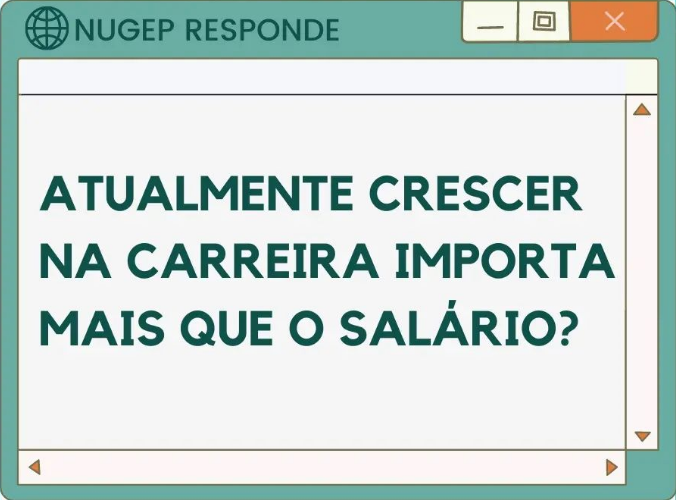

Trabalho se refere ao que você faz agora para ganhar dinheiro e carreira é algo que você investe para se desenvolver profissionalmente e obter reconhecimento. Infelizmente, o antigo retrato de não priorização do desenvolvimento de pessoas ainda é uma realidade na maioria das empresas. Como exemplo podemos citar a falta de valorização do aprendizado e exigir dos canditados anos de experiência em determinada função para fazer parte do corpo de funcionários. A verdade é que o simples interesse pelo emprego, não é o suficiente para que o colaborador permaneça na empresa. A ausência de líderes que agreguem a equipe, motivem, os desenvolva ou até mesmo optem por apresentar salários e benefícios justos e atrativos, ou um plano de carreira para os colaboradores que estão adentrando na organização, são fatores que fazem com que o colaborador permaneça e busque oportunidades de desenvolvimento na própria empresa que atua.
Segundo Diogo Forghieri, diretor da unidade de recrutamento da Randstad, "os profissionais estão se dando conta disso e percebendo que não basta um bom salário em um cenário que, caso você perca o emprego amanhã, não consegue se recolocar. Por uma questão de sobrevivência, então, eles passam a buscar ambientes que oferecem a oportunidade de desenvolver essas novas habilidades que o mercado demanda”
Empresas de pequeno porte, conseguem focar mais facilmente no desenvolvimento dos colaboradores. Se torna mais simples para o pequeno negócio criar um modelo de gestão que valorize o funcionário fazendo com que o mesmo busque o crescimento na carreira. Isso ocorre porque a maioria desse tipo de empresa é gerida pelo próprio empresário, que se responsabiliza pela gestão de pessoas, criando e inserindo na organização práticas de talentos e favorecendo um ambiente interno que priorize a autonomia e o plano de carreira, visando não apenas o currículo profissional, mas valorizando as competências comportamentais.
Por fim, escolher o crescimento profissional na área do seu interesse e em uma empresa que lhe valoriza, inevitavelmente o torna mais motivado e produtivo, por isso é importante encontrar algo que você goste de fazer e que consiga se enxergar atuando com satisfação. Além disso, pensar de que maneiras isso pode ser rentável para que você continue construindo valores, como um patrimônio sólido no futuro, podendo desfrutar do conforto que almeja.